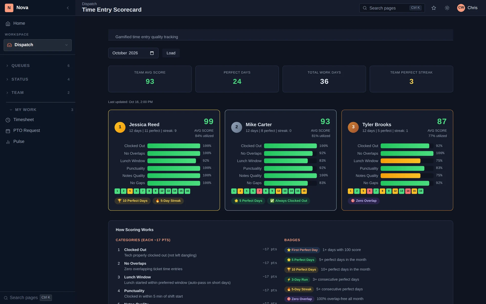

Nova scores ticket quality, reviews each tech's day and tracks time-entry habits — so one-on-ones start from the same facts, and good work gets noticed.

Each ticket gets a grade from A to F based on its time entries and notes — entries that are too long or too short, missing notes and similar issues. Filter to passing, borderline or failing.
Its own letter grade for the day, utilization, a 30-day trend, and what went well and what didn't — for each tech, every day, with a team dashboard for managers.
A 0–100 score built from six habits — clocked out, no overlaps, lunch window, punctuality, notes quality and no gaps — with streaks and badges.
A ready-made brief for each one-on-one: concerns and positives, the numbers and trends, client and internal quality signals, attendance and action items.
QA limits, such as maximum hours on an entry and minimum note length, are settings your admin controls.
Managers and techs see the same facts. Techs see their own scores and trends.
Ticket QA, the daily tech review and the Time Score give manager and tech the same picture of the week. Conversations move from "I think" to "here's what happened" — and the strong weeks get recognized, not just the bad ones.
In the demo we'll walk through QA scores, a tech review and the Time Score for a sample team.